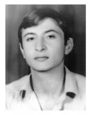
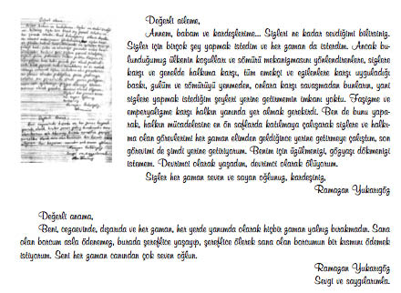

“Biz Bu Mahkemeyi Kullanarak 12 Eylül Darbecilerini Teşhir Ediyoruz.”
Yılmaz Yukarıgöz39
12 Eylül döneminde ağabeyim Ramazan Yukarıgöz 17 Şubat 1981 tarihinde Gölcük’te tutuklandı THKP-C örgüt üyeliği, anayasal düzeni zor yoluyla ortadan kaldırmaya teşebbüs suçlamalarını barındıran 146/1. maddeden yargılandı, idam cezasına çarptırıldı ve ardından da infaz edildi.
Ben de aynı siyasi mücadele içinde yer alan biriydim ve o dönemde örgüt bağlantılı suçlandım ama kabul etmedim. Defalarca gözaltına alındım, sistematik olarak tekrarlanan işkencelere maruz bırakıldım.
Darbeden Öncesi
Biz 4 kardeştik. İstanbul’da yaşıyorduk. Ramazan ve ben, lise öğrencisiydik. Ben çoğu zaman legal kuruluşlarda ve derneklerde siyasi bir mücadele içindeydim. Ramazan illegal bir örgütlenme içerisine girmişti. Mahir Çayan’ın tezlerini savunuyor, halk ayaklanmasıyla birlikte halk devrimini gerçekleştirmek, ülkenin bağımsızlığını inşa etmek için egemen güçlerle silahlı mücadeleye girmek gerektiği, bağımsızlık uğruna her şeyin göze alınabileceğini ve silahlı mücadelenin meşru olduğu tezini savunuyordu. Öbür kardeşlerimde politik bir mücadele söz konusu değildi. Birisi zaten çocuktu. Öbürü pek etliye, sütlüye karışmazdı. Lise 1’e kadar hep beraberdik, ondan sonra bir kopuş oldu. Ramazan, zorunlu olarak dışarıda kalmaya başladı. Çünkü artık aranır bir adam olmuştu. İllegale geçmişti.
Tabii biz hem çalışıyorduk hem de okulumuza devam ediyorduk. Lise bittikten sonra başladım çalışmaya, ondan sonra da hiç durmadım bir daha. Yapabildiğimiz kadarını yapmaya, aileye katkı sunmaya çalışıyorduk.
Ramazan 1979 yılında yakalandı. 1979 yılında THKP-C Dev-Sol kanadında silahlı mücadele veriyordu ve bu örgütte illegal yaşantıya geçmişti. Birçok olayın da faili olarak aranıyordu. Selimiye’ye götürüldü. Sonra Bayrampaşa’ya aktarıldı, Bayrampaşa’dan da firar etti. Firar edince Ömer Yazgan’la beraber kalmaya başladılar. Bu sürecin ardından Akyazı Eylemi gündeme geldi. Gölcük’te kalıyorlardı, ikisi de aranıyordu. Fotoğrafları boy boy asılmıştı her yere. Gölcük’te tam da garnizonun karşısındaki pasajda bir dükkân açmışlardı.

Ramazan Yukarıgöz
Akyazı Olayı ve Dava Süreci
Ramazan Yukarıgöz, Ömer Yazgan, Erdoğan Yazgan, Metin Adil Toraman, Ali Aktürk ve Mehmet Kanbur’un düzenledikleri Akyazı’daki eylem; kuyumcuların soyulması olayıydı. Örgüte finans sağlamak için, soygun girişiminde bulunuyorlar. Özellikle orayı seçiyorlar. Çünkü o bölgede kaçakçılar çok, dolayısıyla altın da çok. Eylemin ilk başlangıcında evlerden ateş açılıyor. Güya 12 Eylül’de silahlar toplanmıştı ya, halen silahlar var aslında. Metin Adil Toraman, Ali Aktürk orada vuruluyor ve ölüyorlar. Metin Kanbur ve Erdoğan Yazgan yaralı yakalanıyorlar. İsmail Gökalp, Ramazan Yukarıgöz ve Teğmen Ömer Yazgan kaçıyorlar. Ömer de yaralı. Daha sonra kaçtıkları yerde sabaha doğru bir operasyon yapılıyor, çatışma çıkıyor ve çatışmada bir tane polis ölüyor. Ölen polis Milli İstihbarat Teşkilatı mensubu Mustafa Kılıç. Ramazan ağır yaralı. Askerler; Ömer, Ramazan ve İsmail’i alıyor, götürüyorlar. Önce İzmit’teki hastaneye, sonra GATA’ya kaldırıyorlar. Ardından şubeye götürüyorlar ve yaralı bir şekilde işkence yapıyorlar. Gölcük Sıkıyönetim Donanma Komutanlığı Mahkemesi’nde 20 Nisan 1981’de mahkemeye çıkarılıyorlar ve yargılama başlıyor. Çok kısa bir süre içinde idam cezası veriliyor. Ramazan’ın avukatları vardı. Bazıları mahkeme kararında bulundu, bazıları bulunmadı. Benden güvenliğim için duruşmaya katılmamam istendi ben de öneriye uyarak katılmadım, dışarıdan takip ettim. Bu cezayı veren mahkeme heyetinden kıdemli yüzbaşı hâkim Eyüp Menteş, o dönemin Adalet Bakanı Cevdet Menteş’in yeğeniydi. Başka bir siyasi dava olan Kurtuluş Davası’nda rüşvet alırken suçüstü yakalanmıştı. Tabii biz mahkemenin tekrar görülmesi için taleplerimizi bildirdik Askeri Mahkeme’ye. Milli Güvenlik Konseyi’ne dahi dilekçeler gönderdik; fakat hepsi sümenaltı edildi ve kardeşimle birlikte diğerleri de alelacele idam edildiler. İdamlardan bir tek İsmail Gökalp, yaşı küçük olduğu için kurtuldu. Diğerlerinin hepsi, Ramazan Yukarıgöz, Ömer Yazgan, Erdoğan Yazgan ki, akrabalık yok bunlarda, Mehmet Kanbur, dördü aynı gece Gölcük’ten İzmit Kapalı Cezaevi’ne götürülüyor ve orada idam ediliyorlar.
Kardeşim 1981’de tutuklandı, aşağı yukarı 2-3 ay içerisinde idam cezası verildi. Fakat Yargıtay’a gitmesi gelmesi, itirazlar derken 1983 yılının 29 Ocak’ında idam edildiler. Tutuklanmasıyla cezanın verilmesi arasında 2-3 ay var. Oradaki karar zaten siyasi bir karardı. Çünkü arkadaşların arasında bir tane de teğmen vardı. Firari üsteğmen, Ömer Yazgan, dolayısıyla kamuoyuna yansıyan ilk silahlı eylemdi. Düşünün 12 Eylül 1980, 17 Ocak 1981 Adapazarı Akyazı Eylemi’ydi. Ancak eylemden dolayı yargılanmadılar zaten. Çatışmada ölen MİT mensubu polis, Ramazan tarafından öldürüldüğü için en ağır cezayı Ramazan alabilirdi. İdam edilse dahi bu diğer arkadaşlar için geçerli olmayabilirdi. TCK’nın 146. maddesine göre yargılandılar, 146/1 anayasayı silahlı çete oluşturarak ortadan kaldırmaya teşebbüs, kaldırmayı amaçlamak için örgüt kurmak. Ondan dolayı yargılandılar, yapılan eylemlerden kesinlikle yargılanmadılar ki, Ömer Yazgan’ın, Ramazan Yukarıgöz’ün İstanbul’da davaları vardı. Hatta Ramazan Yukarıgöz’ün İstanbul’daki Dev-Sol ana davasına bağlanması için taleplerimiz oldu, bu talepler İstanbul’da savcılığa iletildi. Gölcük Donanma’da savcılığa dilekçeler verildi. Fakat Gölcük’teki savcılık, talimatla ifadesinin alınması doğrultusunda karar verdiği için ana davayla birleştirmediler eğer birleştirilmiş olsaydı o zaman buradaki davadan da yargılanacaktı, idam da edemeyeceklerdi. Zaten onun için davaları birleştirmediler.
Ağabeyim idam edildiğinde 21 yaşındaydı, bense 19 yaşındaydım.
Biz, Erdoğan Yazgan ve Mehmet Kanbur’un aileleri, İstanbul’da yaşıyoruz. Ömer’in ailesi Ankara’da yaşıyor. İdam gecesi, 29 Ocak, sabah saat 5:30 gibi kapı çaldı, polis babamı soruyor. Babam da askerin peşi sıra aracın yanına gitmiş. “Cenazeyi alacak mısınız?” diye sormuşlar. Babamın sesi duyuldu: “Bugüne kadar sefilleri oynadık şimdi isyanları oynayacağız!’’ Tabii biz alacağımızı söyledik. Oradan hemen bir araba bulduk. Önce Gölcük’e gittik, sonra İzmit’te olduğunu söylediler. İzmit Kapalı Cezaevi’ne gittik, orada akşama kadar beklettiler ki gündüz çıkmasın, gece getirilsin diye. Askeri konvoy eşliğinde, Ömer’inkini bizden biraz daha önce gönderdiler Ankara’da olduğu için. Üçünü de aynı anda teslim ettiler ve Ramazan, gece defnedildi saat 1-1:30 sıralarında. Cenazeye hiç kimseyi almadılar. Oradan askeri konvoyla, polis eşliğinde getirildi. Sadece aile bireyleri vardı, başka hiç kimse yoktu. Dedem, yeni astsubay olmuş kendini bilmez bir serseri tarafından mezarlıkta tartaklandı.
Cenazeyi getirdiğimizde annem tabutun mührünü söktü, ben açtım. Baktı. Dini vecibelerini yerine getirdik, demişlerdi annemlere. Fakat açıldığında bir battaniyeye sarılmış bulduk, yani elbiseleri üstündeydi, hatta Erdoğan çıplakmış, askeri battaniyeye sarılmış. O şekilde defnedildiler. Tabii annem bunun üzerine sinirlerine hâkim olamadı, birçok şey söyledi o anda, saydı döktü. O akşam annemi de mezarlıktan alıp karakol, şube derken Metris Cezaevi’ne getirdiler ve 15 gün boyunca Metris Cezaevi’nde tutsak kaldı. Aynı işlem Mehmet Kanbur’un kız kardeşine de uygulandı. Mezarlıktan alınan İnsaf Kanbur, 2 yıl boyunca tutsak edildi.
Ağabeyimle son konuşmamız idamdan önce cezaevinde yaptığımız görüşte gerçekleşmişti. Gölcük’te ziyaretlere gidiyorduk, açık görüş dahi yapıyorduk. Haftada iki gündü, annem giderdi, annemin gidemediği zamanlar biz giderdik, ben giderdim. Diğer arkadaşlarla da görüşüyordum. Bazen görüşe beraber çıktıkları, beraber oturduğumuz zamanlar oluyordu. Hatta en son görüşen bendim. Ben görüştükten birkaç gün sonra da eve haber geldi.
Ne zaman idam edileceğini bilmemiz mümkün değildi. Çünkü Resmi Gazete’de yayımlandığı anda hemen geliyorlar, hücresine, apar topar alıp götürüyorlar. Bizim görüştüğümüz an demek ki henüz yayımlanmamıştı. Bizden bir iki gün sonra yayımlanıyor. Fakat idam edileceklerini tabii ki biz biliyorduk, onlar da biliyorlardı ama ailelere, yani anne, baba ve kardeşlere söyleyemiyorduk. Kendileri hazırlıklıydı. Bunun siyasi karar olduğunu, bu infazların yapılacağını ve ondan sonra da infazların duracağını, yani en son infazların da bunlar olacağını söylemiştik. Danışma Meclisi’nin verdiği kararlarla idamlar onaylandı, yani yasadışı bir olaydı. İlyas Has’la, Hıdır Aslan da idam edildiler ama onların idamını seçimden sonra parlamento onayladı. Bu idamlardan sonra da idamla yargılananların cezalarını onaylamadılar. O zaman bir tek Ekmekçiyan’ı40 onaylamışlardı, havaalanında eylem yapmıştı. Onu idam ettiler, ondan sonra bizim arkadaşlarımızı idam ettiler, ondan sonra da Hıdırları idam ettiler ve o şekilde bıraktılar.
Prosedürü bildiğiniz için her an bekliyorsunuz, her an gelebilirler. Ama bunun üzerinde durmuyorduk, dışarıdaki insanlardan bahsediyorduk, oradaki çalışmalardan, onların arkadaş ilişkilerinden bahsediyorduk. Ne zaman olacak, bugün mü gelip alacaklar sizi diye bir şey konuşmuyorduk tabii ki.
Son Mektubu 26 Yıl Sonra Okuyabildik
İdam edildikleri gece mektup yazmışlar ailelerine. O mektuplar bizim elimize 26 yıl sonra geçti. Mektupların varlığını biliyorduk. İzmit’te bulunan bir asker tarafından bize söylendi. Dolayısıyla biz de mektupları istedik; fakat babam ve ben, İzmit’teki bir albay tarafından tehdit edildik. Yıllar sonra elimize mektubun fotokopileri geçti. 6 ay sonra da şu anda üyesi olduğum ve İstanbul temsilciliğini yürüttüğüm Devrimci 78’liler tarafından Kara Kuvvetleri Komutanlığı’ndan adımıza binlerce sayfalık bir dosya alındı. O dosyanın içerisinden “Verilmesi sakıncalı zarf” çıktı ve o zarfın içindekiler de mektuplardı. Mektupları okuduğumuzda hiç de öyle sakıncalı bir şey olmadığını gördük. Onu bile çok gördüler, onu bile vermediler. Mektuplar dahi 26 yıl tutsak edildi. Hatta o dosyanın içerisinden çok ilginç şeyler çıktı. Mesela organ bağışı yapmışlar. İzmit’teki albay o bağışı belgeleyen kâğıdı yırtıp atmıştı. İdam yapılırken, idam edecek cellatla yapılan pazarlığın faturası çıktı. Hem kâtibe hem cellata ödenecek olan paralar, işte cellata idam ettiği kişi başına 20 bin lira, kâtibe toplam 1.600 lira ödeme yapılacağına dair bir fatura... Pazarlık usulü olmuş bu, yani cellatla pazarlık etmişler ve belgede de aynen o şekilde geçiyor, onun faturası dahi çıktı. Hatta bütün bunların altında Cumhuriyet Savcısı’nın imzası var. Tabii Türkiye’de 12 Eylül’de 17 tane devrimci idam edildi, 17 yaşındaki bir çocuğu dahi idam eden bir cuntadan daha farklı bir şey bekleyemeyiz.

Ramazan Yukarıgöz’ün ailesine son mektubu
Aile İçindeki Diyalog
İdamdan sonra kardeşlerim durgundular, pek konuşmuyorlardı. Eve gelenleri ben karşılıyordum. Hatta eşim de gelmişti, o zaman evli değildik ama tanışıyorduk. Aile içinde birbirimizi suçlama gibi bir şey kati süretle söz konusu olmadı. Çünkü aile yapısı zaten belli. Ailede neyin ne zaman yapılacağı, kimin yapacağı, kimin resmi olarak veya gayriresmi olarak nereye gideceği belliydi. Kaldı ki öyle bir iç çatışma kesinlikle olmadı.
Ekonomimiz iyi değildi. Babam, ağabeyimden sonra çalışamadı, işi bıraktı. Baba da çalışmayınca tabii ki yaşam daha zor bir hale geldi. Mesela ben, yurtdışına çıkacaktım çalışmak için. İstanbul Motor Meslek Lisesi’ni bitirmiştim, diplomamı aldım, gittim, gemilere gireyim dedim. O zaman alıyorlardı, yurtdışı gemilerinde çalışır, oradan devam ederim dedim. Pasaport dahi vermediler bana o zaman, yurtdışına çıkışın sakıncalı dediler. Halbuki sabıkam yoktu, sicilim vardı.
Siyasiydi, kirli bir sicil değildi. Siyasi olduğu zaman onların işine gelmiyor. Kirli bir sicil olsaydı pasaportumu verirlerdi. Hatta silah bile verirlerdi, temiz olduğumdan vermediler. Dolayısıyla kendi çabalarımızla birtakım işler yapmaya çalıştık. Hayatımızı idame ettiriyoruz, halen devam ediyoruz aynı şekilde.
Tabii ki ailemizin kanayan bir yarasıdır ama objektif baktığımda düşen de olacaktı, kalan da olacaktı. Bir sürü arkadaşımız da ölmüştü, sonuçta onlardan önce gidenler olduğu gibi, onlardan sonra gidenler de olacaktı. Sadece ağabeyim değil, o da normal arkadaşlarımız gibiydi. Tabii anne ve baba için böyle olmuyor, biraz daha farklı. O zaman belki pek anlayamıyordum da şimdi ben de baba olduğum için onların ne düşündüğünü daha iyi anlayabiliyorum. Bir evladını kaybetmeyi, eve geç geldiği zaman merak etmeyi, bütün bunları baba olduktan sonra öğrendim. Annem merak ederdi, babam merak ederdi, bizim yokluğumuzu. Oturup konuşurken anneme anlatırdım, babama kısmen anlatmaya çalıştım, babam zaten bilirdi. Babam gece yarılarına kadar sokaklarda gezen bir adamdı, kahvelerde şurada burada arkadaşlarıyla otururdu. Babam idamın nedenlerini falan çok iyi biliyordu. Ama tabii ki oğlu olduğu için, çocuğu olduğu için çok daha fazla acı çekti. Anneme “Bak işte anne, biliyorsun ne için mücadele ettiklerini” derdik, “Benim başım dik. Utanılacak bir şey yapmadı benim çocuğum. Sonuna kadar da arkasındayım” derdi. Bunları hâlâ söyler.
Tepkiler
Ağabeyimin idamından sonra korkudan ailemize gelmeyen akrabalarımız bile oldu. Bunların bir kısmı çok yakın akrabalarımızdı. Ailemize gelmeye çekinen, hatta idamdan önce cezaevine ziyarete gitmeye korkan aile bireyleri bile oldu. Çevreden, mahalli yapıdan bahsedersek, hiç kimse öyle karşımıza çıkıp bir şey diyemezdi zaten ama gelip geçmiş olsun diyenler, baş sağlığı dileyenler oldu. Toplumdan aileyi rencide edici, rahatsız edici tepkiler olmadı ama aileden bireylerin uzak durması üzücüydü. Bu da bir acıdır aslında. Sonradan geliyorlar gidiyorlar ama not defterime kaydedilmişler artık. Ben görüşmüyorum hiçbirisiyle, ne gidiyorum ne geliyorum, benim onlarla herhangi bir bağım yok ama tabii annemin babamın yakınlarıdır, kardeşidir, onlar birçoğuyla görüşüyor.
Şubeye Götürülüyorum
Ben cezaevine girmedim, hep şubeden döndüm. 1. Şube’de gerçekten çok işkence gördüm, defalarca. Hatta düşünebiliyor musunuz Kadıköy’de 1983’te Anavatan Partisi bombalanıyor, beni gelip buradan alıyorlar, 1. Şube’ye götürüyorlar. Sen bombalamışsın, diyorlar. “Niye ben bombalayayım, bunlar başka örgüt, burada Dev-Sol yazıyor. Ben izledim haberlerde” diyorum. “Ee sen necisin?” diye soruyorlar, “Ben THKP-C Üçüncü Yol Davası’ndan getiriliyorum buraya” diyorum. Sen onlardan mısın diyor. Hayır diyorum ondan dolayı getiriliyorum. Düşünebiliyor musunuz, ondan dolayı bile beni suçluyorlar. Buna benzer bir sürü uygulamalar. Mutlaka bir şeyi kabul ettirmek istediler. Tabii reddediyorsunuz, reddettiğiniz zaman da işkenceler başlıyor. Aklınıza ne işkence geliyorsa yapıyorlar.
Bugünden Bakınca
İki gün önce Facebook’ta yazmıştım: “Uyuyan halkıma: Uyandığın zaman yine aynı şeyleri yaşayacağız. Biz bizi bıraktığın yerdeyiz, uyandığında ODTÜ’yü göreceksin, uyandığında Maraş’taki engellemeleri göreceksin, Roboski’yi göreceksin, sen en iyisi uyu, hiç uyanma.”
Biz derken benim gibi düşünen arkadaşlarımı kastediyorum, bir kısmını kastetmiyorum, aynen bıraktıkları yerde gidiyoruz. Nereye kadar gider, sonucunu kimse tahmin edemez. Yarın da bitebilir, bitirilebilir, farklı bir şekilde de engellenebilir ama sonuna kadar, kesintisiz olarak gidecektir. Verilen mücadelelerin hiçbiri çıkar elde etmek için yapılmadı. Bugün RTE’nin dediği gibi devrimcilerin kandırılması gibi bir durum söz konusu değildir, herkes kendi beyniyle kendi iradesiyle mücadele etmiştir, hareket etmiştir. Bunun artısı da olacaktır, eksisi de olacaktır. Her eylemin %50 şansı vardır. Ne yapacaksınız, bugün çıksanız Taksim’de bir eylem yapsanız, başarı şansı %50’dir. %50 de yıkılma şansı vardır. Bugün Türkiye’deki siyasi hareket, sol hareket 12 Eylül tarafından yenilgiye uğratılmıştır. Bu açık bir gerçektir. Bunun yanında bizim dönemimiz pasifize olmuş. Darbeciler İslamcıları ele almış, onları beslemiştir. Bugün bunlarla başı derttedir. Şu anda onlar birbirini tasfiye etmeye çalışıyor. İslamcılar orduyu tasfiye etmeye çalışıyor. Bir dönem bizim üzerimize yürüyen ordu, albaylar şimdi soldan destek bekliyorlar. Hatta Oğuzhan Müftüoğlu’nun söylediği bir laf vardı. “Solda adam mı bıraktınız da destek bekliyorsunuz?” Yani bu şekilde giden bir sistem var Türkiye’de. O sistem her zaman tabii ki böyle gitmez, mümkün değil. Belki biz görmeyiz ama değişebilir veya daha farklı çöküntüler de olabilir. Bunun olmaması için de tek bir şey var, direnmek, başka bir şey değil.
Biraz da halkın destek vermesi gerekiyor. Çünkü muhalif olan insanlar bir kuruluş veya bir kurumu hayata geçirdiklerinde artık onun bütün giderlerini kendileri karşılıyorlar. Herhangi bir yerden Kızılay gibi yardım almıyorlar. Mümkün olduğunca bu gelişimi devam ettirmeye çalışıyoruz. Düşünün 12 Eylül’de hiç ses çıkmıyordu, şimdi her taraftan ses çıkıyor. Bu muhalif ses, geçmiş mücadelelerin bir ürünüdür. Bugün ODTÜ’den ses çıkıyor, düşünün kaç yıl sonra, 1968, 1977, sene 2012. Diğer üniversitelerden ses çıkıyor, fabrikalardan, sendikalardan ses çıkmaya başladı. Eğer bizim gibi direnenler, mücadele edenler olmasaydı insanlar tamamen pasifize olmuştu, tamamen yılgın olmuşlardı, kalmışlardı.
Benim siyasi mücadelem hep devam etti bugüne kadar. Hâlâ da devam ediyor. Şu anda da Devrimci 78’liler Federasyonu’nun İstanbul temsilciliğini yürütüyorum.
Ancak şunu eklemem gerekir ki, şu ana kadar hiçbir devrimci tutsak hükümetten veya devletten af istememiştir. Sadece serbest bırakılsın denmiştir ve bu bir direktiftir. Çünkü affedilecek bir şey yapmamışlardır onlar. Şu an içeride tutuklu olanlar da mahkûm olan devrimciler de özgürlük mücadelesi neyse onu gereğini yerine getiriyorlar.
Umutlar, Hayal Kırıklıkları
Hâlâ umut var. Can çıkmadan umut çıkmaz. Devrim hareketi kesintisizdir, kesintisiz devam etmelidir. Belki bugün ölürüm, belki yarın ölürüm ama sonuna kadar da etmelidir. Benim bıraktığım yerden arkadaşım devam eder, arkadaşımın bıraktığı yerden onun arkadaşı devam eder ama eder. Bakın, Ulaş Bardakçı, Hüseyin Cevahir öldürüldü; o zamanki kadro, Mahir Çayanlar yok edildi. Ne oldu sonuçta binlerce insan çıktı, onların döneminden sonra, düşünün yani. En son 1980 darbesiyle bu hareketin önüne geçmeye çalıştılar. Tabii bunu tek başlarına yapamayacaklardı, Amerika’nın yardımı, desteği oldu.
İnsanın ister istemez hayal kırıklıkları oluyor. Çünkü ortaya çıkan, gerçekten solcuyum, devrimciyim diye ortaya çıkan, daha sonra farklı açıklamalar yapan insanlar olduğunda tabii ki hayal kırıklıkları yaşıyorsunuz. Hiç tahmin etmediğimiz insanlardan neler duyuyorsunuz.
Kendi içimizdeki ayrışmaları da 1980’in eseri olarak değil, grupların içerisindeki paylaşıma ve farklı yapıların ortaya çıkmasına bağlıyorum. Düşünün TKP’nin bile şimdi yenileri ortaya çıkmaya başladı. İdeolojik olduğuna inanmıyorum ben bunların. Eğer sayfanın bir tarafı sarıysa, bir tarafı beyazsa, sayfanın sarı tarafını da konuşmak gerekir, beyaz tarafını da konuşmak gerekir. O sayfayı yırtıp atabilirsiniz gerektiğinde ama bu böyle yapılmıyor. Ahmet mi gelecek, Mehmet mi gelecek? Bu kesinlikle kişisel meselelerden dolayı parçalanmadır. Şimdi bugün İstanbul’da 78’liler Girişimi var, diyeceksiniz siz de Devrimci 78’liler Federasyonu’sunuz, aranızdaki fark nedir? Aramızdaki fark, bu da bir şeye dayanıyor, kişilerin, çıkar sağlama veya egemenlik kurma içgüdülerinden kaynaklanıyor. 78’liler Vakfı’nı kuranların bazıları da Federasyon’da. Neden ayrılmışlar, bu nedenlerden dolayı ayrılmışlar.
Çocuklar
Çocuklarım siyasi geçmişimizi biliyorlar. Aile içerisinde konuşuyoruz sık sık. Ayrıca tabii ki haber oluyor bu tür konular. Haber olmaya başladığında istedik ki onlar da bilsin. Yarın üniversiteye gidecekler, orada karşılarına birtakım şeyler çıkabilir diye önce biz anlatmak istedik. Neden olduğunu, amcalarının niçin darağacına çıktığını, hepsini anlattık. Daha sonra basından da ve başkalarının anlatımlarından da okudular. Derneklerde yapılan panellerdeki konuşmaları dinlettik, filmleri, belgeselleri izlettik. Akyazı dışında Maraş Olayları’nı izlettik, yarıya kadar geldiler, ağlayarak kalktılar. Daha fazla izlemediler, tamamını bitiremediler. Böyle şeyleri tabii ki anlatıyorsunuz. Bizim ideolijimize karşılar mı, değiller. Olamazlar zaten, olsalar biz aynı evde yaşayamayız. Mümkün değil, kim olursa olsun.
Biz çocuklara kesinlikle, şunu yapın, bunu yapın, şuraya gitmeyin, buraya gidin demedik. Hatta bizim de içinde çalıştığımız bazı etkinliklere gidiyoruz, işte Halkevleri’nin olsun, başka kurumların olsun, yardım amaçlı geceleri oluyor, onlara gidiyoruz. Çocuklara diyoruz ki, siz de gelin, beraber gidelim hem oradaki insanlarla tanışırsınız hem değişik bir ortam görmüş olursunuz, insanların ne dediğini dinlerseniz, birtakım şeyler alırsınız ama gelmiyorlar. Kızım nispeten daha çok gidiyor da oğlum gitmiyor.
Tarifi İmkânsız Acı
Hiç unutamadığım, beni derinden yaralayan bir şey gerçekten yok. Gerçekten şöyle söyleyeyim, taş gibi oluyorsunuz. Belki daha önceden sorulsaydı bir şeyler bulabilirdim, belki bir şeyler söyleyebilirdim ama şu an mümkün değil, söyleyemem. Gerçi o zaman biraz da siyasi olmaktan dolayı daha soğukkanlıydım. Siyasi olarak bakıyordum olaylara, duygusal olarak hiçbir zaman yaklaşmadım, hâlâ da yaklaşmıyorum. Yine siyasi bakış açımla değerlendiriyorum. Devrimcilerin amacı intikam almak olamaz, mücadele devrim içindir.
12 Eylül Davası
Annem mahkeme süreci henüz başlamadan önce “Geçici madde kaldırılırsa ne yapacağız, ne edeceğiz” diye sormuştu. Anneme “Benim dilekçem hazır” dedim. Referandum yapılmadan önce dilekçeyi hazırladım. Çünkü kabul edilecekti, geçici madde kalkacaktı. Önce kurumlar dilekçe verdi, kurumların ertesi günü savcılığa dilekçemi verdim. Annem, Kenan Evren’in ölmesini kesinlikle istemiyorum, diyor. Ramazan’ın mektuplarını alana kadar ölmeyeceğim demişti. Mektupları aldık, şimdi “Kenan Evren’in mahkûm edildiğini görmeden ölmeyeceğim” diyor. Yarın başka bir şey için ölmeyeceğim diyecek, ha bire yaşayacak! Bir beklentisi var. Tabii ki mahkemeden birtakım kararların çıkmayacağını empoze etmeye çalışıyoruz ama nereye kadar edeceğiz bilmiyorum. Kararı vermeyecekler, uzatacaklar, Kenan Evren ve Şahinkaya’nın ölmesini bekliyorlar tabii.
12 Eylül Davası’nda mahkeme sürecinde ben müdahillik dilekçemi verdiğimde kardeşimin öldüğüne dair benden delil istediler. Halbuki idam tutanağı var. Dilekçeye iliştirmiştim. Savcılık’a verdiğim suç duyurusunda da idam tutanağı vardı. Ayrıca burada ağır ceza hâkimine verdiğim müdahillik dilekçemde de yine aynı tutanak vardı. Fakat kabul etmediler. Yine delil istediler. Milli Güvenlik Konseyi kararı var, Danışma Meclisi kararı var, Resmi Gazete var, hepsi ellerinde fakat benden yine delil istediler. Neyse, o delilleri de verdik, müdahilliğimiz o şekilde kabul oldu. 17 Ocak 1981’de Akyazı Eylemi olmuştu ve idam edilen 4 genç yakalanmıştı, 17 Ocak 2013’te ise yine mahkeme olacak.
Herkes bana aynı soruyu soruyor, “Bu mahkemeden ne bekliyorsunuz?” Bir şey beklemiyorum. Biz bu mahkemeyi kullanarak, 12 Eylül darbecilerini teşhir ediyoruz. Yaptıkları işkenceleri, pislikleri, idamları, kayıpları, hepsini teşhir etmeye çalışıyoruz, ediyoruz da. Bu devlet 12 Eylül darbecilerini yargılamaya çalışıyor ama tabii ki göstermelik. Çünkü bunun adı zaten Çankaya’da konuldu. Kenan Evren oraya davet edildi, orada gerekli şeyler ona anlatıldı, ondan sonra savcı evine gitti, çay içerek ifadesini aldı, dünyanın hiçbir yerinde görülmüş şeyler değil bütün bunlar. Hiçbir şekilde mahkemeye getirilemiyorlar. Şimdi ölmelerini bekliyorlar. Bakın bu yargılama sonucunda, yargılananlar eğer ölürlerse yargılamaya çalışan devlet, büyük bir devlet töreni yapacak, bu paşalar devlet töreniyle kaldırılacak, prosedür gereği, protokolde var çünkü. Ceza almıyor adam, ölen birisinin zaten ceza alsa bile, adli sicili siliniyor, kaldı ki ceza bile almadan ölürse devlet töreni yapmak zorunda kalacaklar, bayrakları bile yarıya indirirlerse hiç şaşmayın.
Düşünün Uruguay’da, Yunanistan’da, Şili’de darbeciler yargılanıyor, burada adam konferans görüşme yapıyor, kahve içerken yakalanıyor, yatıyor, bir de Şahinkaya kahve içiyordu, ne içiyorsun diye avukatlar itiraz edince kahve dedi. Su diye oradan telkin ediyor avukatı “Su, su de!” diyor. Kenan Evren de suyu aldı, açtı kapağını, nasıl bakıyor ama biliyor musunuz ekranda. Suyu içti, ohhh yapıyor bir de bize karşı. Adamlar rahat, her şeyleri karşılanıyor, maaşlarını net olarak söyleyebilen adam bunlar, net kuruşuna kadar. Kenan Evren’e soruyorlar, rakamı söylüyor, küsuratını her şeyi söyleyebiliyor ama Erdal Eren’i tanımıyor, hatırlamıyor. Düşünün, bu devlet böyle bir devlet. Osmanlı döneminde de böyleydi, monarşi, şimdi farkı yok, temsili demokrasi, oligarşik bir yapı, karıştırmışlar işte monarşi ile devam ediyor gidiyor. Baksanıza kuvvetler ayrılığını bile eleştiriyor adam. Öyle bir şey önümüze engel diyor.
Yüzleşmek değil, hesap sormak istiyoruz. Yüzleşecek bir şeyim yok, onlarla aynı tahtaya basmıyorum çünkü. Aynı tahta üzerinde ikimiz de dönüp yüzleşelim veya fikirlerimizi ortaya koyalım değil, faşist bir zümreyle biz zaten tartışmayız.Biz Devrimci 78’liler olarak bir Utanç Müzesi oluşturduk. Müzeyi taşımamızdaki gaye 12 Eylül darbecilerinin neler yaptıklarını teşhir etmek, işte bu kadar insan öldürülmüştür, bu kadar insana şu işkence aletleriyle işkence yapılmıştır ve burada mücadele eden insanların birer eşyaları da bunlardır... Toplumda zaten duyarlı olan insanlar geliyor. Farklı düşüncelerden gelen insanlar yok mu, onlar da mutlaka gelecektir. Geldiği zaman kendisine ders çıkaramayan insanlarla bizim yüzleşme gibi bir derdimiz yok. Esasen o tür insanların gelip özür dilemesi gerekir. Onlara hesap vermek zorunda değiliz ki onlar bize hesap verecek. Çünkü o tür düşünen insanlar Osmanlı döneminden beri biat eden bir toplumun parçası. Edilgen bir toplum oluşmuş, ne derse onu yapıyor. Düşünün öyle bir toplum ki, bir kilo pirince, bir kilo yağa bireysel oyunu dahi satabilen insanlardan oluşuyor. Bu insanlar da o zaman yaşamadılar mı 12 Eylül Darbesi’ni, 12 Mart Muhtırası’nı? Hepsini yaşadılar ama şimdi akıl veremezler ki bize. Bizden akıl almaları gerekecek, kusura bakmasınlar. Onlarla yüzleşmek gibi bir derdimiz yok. Bizim derdimiz sadece darbecilerden, 12 Eylülcülerden veya şimdiki faşist güruhtan hesap sormaktır.
39 Diş protez teknisyeni. Ağabeyi Ramazan idam edildiğinde 21, kendisi ise 19 yaşındaydı.
40 7 Ağustos 1982 yılında 9 kişinin yaşamını yitirdiği 72’sinin ise yaralandığı Esenboğa Havalimanı’nın bombalanması olayının faillerindendir. Güvenlik güçlerinin müdahalesi sonucu eylemi gerçekleştiren Zohrab Sarkisyan adlı örgüt üyesi ölü, kendisi ise yaralı olarak ele geçirildi ve tedavisinin ardından Mamak Askeri Cezaevi’ne gönderildi. Yargılamanın ardından 7 Eylül 1982’de idam cezasına çarptırılan Ekmekçiyan 28 Ocak 1983’te Ankara Merkez Kapalı Cezaevi’nde asılarak idam edildi.